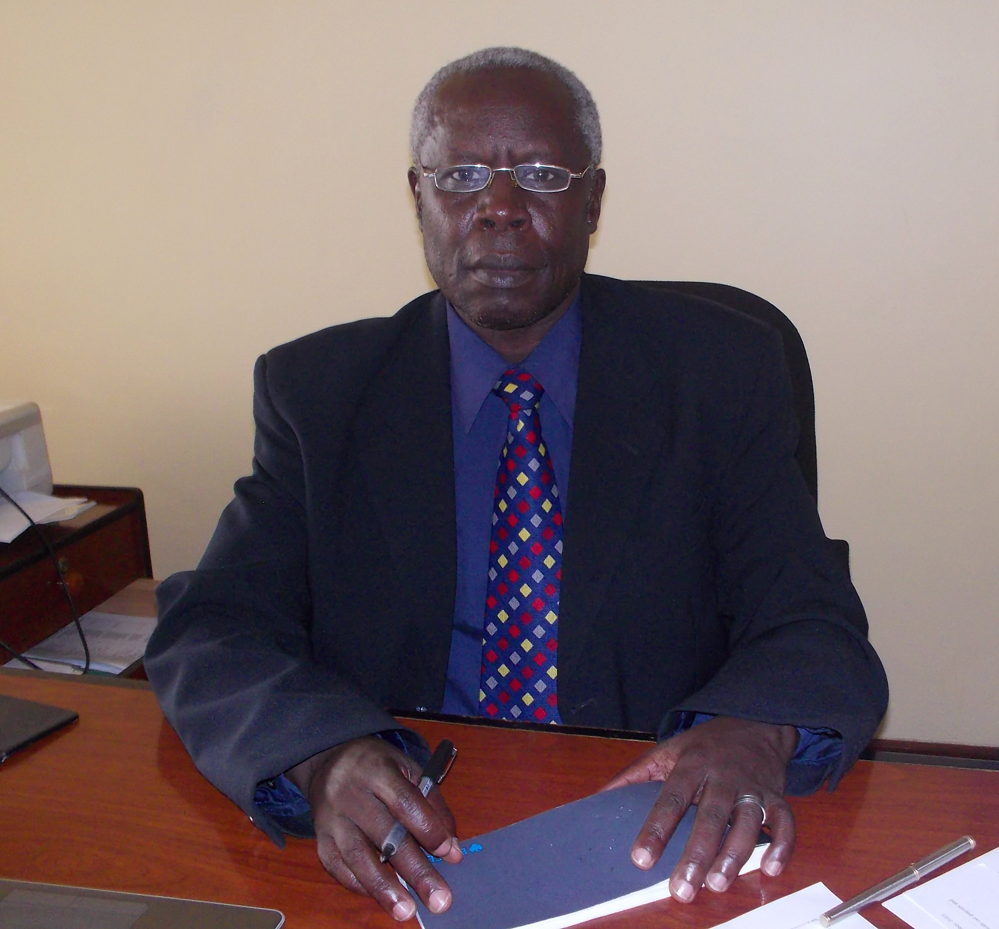

It is with great pleasure that I welcome to you to LIFE Ministry Uganda. Born in 1971, we are the oldest ministry of Campus Crusade for Christ in Southern and Eastern Africa. From our humble beginning on Makerere University campus in 1971, today we have active ministry in more than 14 university campuses around the country.
Beginning with two staff – Dr. Lazarus Seruyange and Dora Rubombora under the leadership of The Late Bishop Methuselah Bugimbi the ministry has expanded to 36 staff serving in different fields including 5 who are on long-term international assignments.
Our vision is: A Vibrant Christ-Centered Movement Accelerating The Fulfillment Of The Great Commission And Societal Transformation In Uganda And Beyond.
Our mission is: We take every opportunity to connect, win, build, train, mobilize and send laborers for eternal harvest and societal transformation in Uganda and beyond.
While encouraging and promoting global perspective, local creativity, and contextual relevance, and in order to build and remain a cutting edge spiritual movement accelerating the fulfillment of the Great Commission and societal transformation in Uganda and beyond, we have identified five critical priorities to focus on.
1. Movements of Pray-ers
We recognize that the Great Commission is from God, and that only God can fulfill it. Secondly, we recognize that the Great Commission is about praying for the Kingdom of God and his will to be established on earth as it is in heaven. This calls for intentional personal and corporate commitment to pray, to develop multiplying movements of pray-ers (people involved in praying for the fulfillment of the Great Commission), and to help create strategic local and international prayer networks.
2. Student-Led Movements
Uganda is the second youngest nation on earth with 78% of its population under the age of 30. Young people and students in particular are the future of any nation, therefore the directions given to them defines the future of that nation. By reaching and discipling students everywhere, we are pleased to be involved in shaping the destiny of Uganda and beyond. We are committed to build movements of evangelism and discipleship on every strategic campus and high school, and raise transformational leaders among those students.
3. Leader Impact Movements
Through this strategy we help to introduce marketplace leaders, both young professionals and top executives to the life and the person of Jesus Christ; to prepare them to handle their lives and professions according to biblical values; and to empower them to be effective witnesses for Jesus Christ in their respective areas of influence. Our overarching goal is reach leaders who will exert positive beneficial influence that inspires others to do likewise. Marketplace leaders invest their L.I.F.E. as kingdom builders. L.I.F.E. is an acronym for Leadership, Influence, Finances and Expertise.
4. Global Church Movements
Regardless of geographic location, gender, tribe, and profession, every person needs to be given the opportunity to encounter the person of Jesus Christ. While intentionally helping plant new churches and improve the quality of discipleship, we proactively and tactfully address socio-economic and environmental needs of the society. We intentionally promote strategic partnerships and networking in the Body of Christ that would result into effective mobilization and deployment of personnel, material, and other strategic resources necessary for the fulfillment of the Great Commission in Uganda and beyond.
5. Digital Strategies
As we use digital innovations, tools, resources, and platforms, we passionately connect everyone to the love and saving power of Jesus Christ, as we deeply build and send multiplying disciples in succeeding generations, in Uganda and beyond. We also provide spiritual and strategic leadership in partnership with the body of Christ, using digital innovations, platforms, tools and resources.
6. Organizational Capacity
We give priority to creating the kind of environment which facilitates field effectiveness. This implies establishing and maintaining appropriate organizational resources, structures and systems: quality recruitment; effective training and strategic deployment of full-time and associate staffs; instituting contextually relevant development plan and processes for organizational leaders; continuous mobilization of needed resources; and optimal utilization of technology in building sound management and administrative system.
Our ultimate goal as LIFE Ministry Uganda is to accelerate societal transformation, as we build spiritual movements everywhere in Uganda, so that everyone knows someone who truly follows Jesus Christ. Our language, values, and behavior must reflect our dedication to develop local believers as leaders of the spiritual movement and kingdom laborers. In this respect, we are committed to equipping and sending transformational, multiplying lifetime laborers into every vocation, neighborhood, culture and nation.
God has gifted us with some of the most effective, yet simple transferable strategies and tools, for evangelism and discipleship, that are available for use by the Body of Christ. These includes resources like the Jesus Film and other related electronic media products, Family Life strategy, Athletes-in-Action (AIA), Life Education strategy (Crossroads), Church Planting strategy, Social Response strategy, etc.
Come …Join Us …Let Us Change Our World …Change It For Good …Change It For God